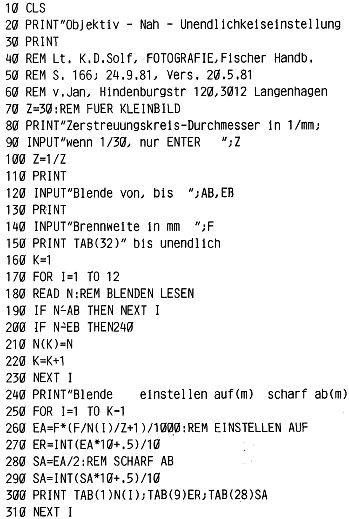
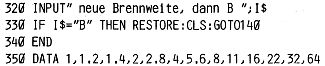

Nascom Journal |
Juli/August 1982 · Ausgabe 7/8 |
Obiges Programm dient der Bestimmung der Entfernung des Winkels zwischen zwei Orten. Es ist bei mir im Einsatz zur Bestimmung der Empfangswürdigkeitg verschiedener Sender. Hierzu benötigt man die geografischen Koordinaten beider Orte(ggf. Generalkarte) und z.B. das Verzeichnis der Ton-und Fernseh-Rundfunksendestellen der Bundespost.
Viele Foto-Objektive weisen eine Tiefenschaerfe-Skala auf. Bei Zoomobjektiven hat man meist darauf zu verzichten. Das folgende Programm erlaubt das Berechnen der Entfernung, die man einstellen muss, um von moeglichst nahe bis unendlich alles scharf eingestellt zu haben. Die am Objektiv moeglichen Blendengrenzen sind anzugeben, zusaetzlich der zugelassene Zerstreuungskreis (bei Kleinbild 1/30) und die Objektivbrennweite.
 
Im „Tiefenschärfe-Programm“ ist ein Fehler in Zeile 90. Durch Drücken der Enter-Taste alleine wird Z=0, und dadurch ergibt sich ein /0 Fehler(Divide by Zero). Man mußte folgende Zeile einfügen:
99 IF Z=0 THEN Z=30
Dafür könnte natürlich Zeile 70 wegfallen.
Red.
Der nascom bietet die Möglichkeit, zur Fehlersuche oder Analyse von Programmen die Befehle im Single Step abzuarbeiten. Dazu wird über Bit 3 von Port 0 softwaremäßig ein NMI erzeugt, der grundsätzlich ein Verzweigen nach 0066H bewirkt. Dort springt NAS-SYS nach 0C7DH in die Workspace, und an der Stelle ist ein Sprung auf die Single Step Routine eingetragen, die die Registerinnalte ausgibt und auf Eingabe wartet.
Oft reicht aber der Bildschirm für eine übersichtliche Analyse nicht aus, oder man weiß gar nicht, was für ein Befehl ausgeführt wurde. Vielleicht stört auch die Ausgabe der Register bei geforderten Eingaben, oder es sollen nur einzelne Befehlsfolgen analysiert werden.
Das folgende Programm generiert nach Aufruf zu jedem Befehl des Programms, das getraced werden soll, einen NMI, rettet den Programmstatus und ruft ein Unterprogramm auf, von dem abhängt, was beim Trace passieren soll. Bei mir wird die Ausgabe auf den Drucker umgelegt, die Registerinhalte des getraceden Programms werden ausgegeben, gefolgt von dem nächsten auszuführenden Befehl. Dazu benötigt das Programm den (reloziierten) Disassembler aus der mc 4/82 auf 1000H bis 153FH. Diese Ausgabe erfolgt aber nur für Befehle ab 1000H, damit der Aufruf von Monitor-Routinen zur Ein- und Ausgabe nicht getraced wird. Beliebige Verfeinerungen sind hier denkbar.
Das Programm hat die Einsprungadresse 1000H. Es kann als Hauptprogramm angesprungen werden, dann muß eine Hexadezimale als Adresse eingegeben werden, ab der getraced werden soll. Wird das Programm als Unterprogramm aufgerufen, so muß ein Zeichen >F eingegeben werden und das Programm beginnt zu tracen, wenn es ins rufende Programm zurückkehrt.
Um ROM-BASIC zu tracen, muß das ganze natürlich verschoben werden (z.B. nach 5000H). Dann ruft man das Programm am besten mit der USR-Funktion auf. ROM-BASIC legt übrigens bei FEC9H die NMI-Adresse in der Workspace um auf seine Break-Routine. Beim Tracen sollte dieser Befehl also umgangen werden.
| Seite 56 von 60 |
|---|